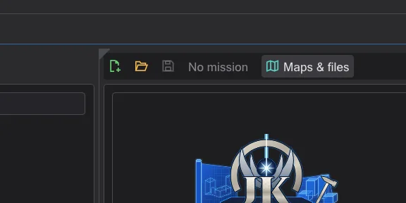

Arrange windows and screens
Put any panel anywhere - beside, below or as a tab of another one in the main window, or in its own window on a second screen - and save the arrangement under a name, per area.
Every area - Events, Mission, Model, Map Editor and Menu Editor - is made of panels that are docked in the main window. As long as you move nothing, every panel stays in its place: the standard layout, to the point exactly as before, with the same dividers.
Take a panel out#

- 1
Open the menu Window (in the map editor it is the last menu, after NetRadiant's) and click the panel under In its own window, for example the timeline. It becomes a window of its own; its place in the main window goes to its neighbours - the mission view gets taller.
- 2
Or point at the top left corner of a panel: a small triangle appears. Drag it away and the panel comes out with it; a click on it shows the panel's tab instead.
- 3
Drag the window by its title bar out of the main window: it becomes a real Windows window and can go onto a second screen. It keeps drawing there - the 3D views and the real-time light of the map editor included. Files can be dragged onto such a window as onto the main window (for example a model onto the XY view of the map editor, or a .menu file onto the canvas of the menu editor).

Show panels hides a panel completely; its space goes to the neighbours as well. The section Other windows opens the helper, the tutorials and the messages - they are windows of their own anyway.
Combine panels and dock them anywhere#

Drag the window of a panel over another panel - in its own window or in the main window: markers appear. Drop it on the middle marker and both become tabs; drop it on an arrow and it sits beside, above or below. So the Script Flow can go under the map view, the entity layers can become a tab of the map view, the camera of the map editor can go below the XY view - like in Blender. The dividers between docked panels can then be dragged, a tab can be dragged out again. This works for the panels of one area; dialogs such as Find stay on their own.

Dock a panel back#
- Close its window with its x - the panel goes back to its place, nothing is lost.
- Or click the panel under In its own window again.
- Or drop it on a marker in the main window, wherever you want it.
- Reset layout brings all panels of the area back to the standard layout.
Save, load and reset layouts#
Each area has its own layouts. Save layout as stores where every panel is - docked in the main window, in its own window, hidden -, where these windows are, on which screen, and how they are combined. Load layout switches to a saved layout, Delete layout removes one, Reset layout brings every panel of the area back to the standard layout. The current layout of every area is kept in the settings and is there again at the next start.
Screens that change#
- A screen is unplugged or arranged differently: windows that were on it come back onto the screen of the main window, at their size.
- A screen is smaller than a window: the window is made just small enough to fit.
- A window moves onto a screen with a different scale (100 %, 150 % ...): its size and text follow the scale of that screen.
Map editor#
NetRadiant's layouts stay the default (Preferences > Layout): Regular, Regular Left and Split (also with freely assigned places and with the built-in entity window) each have their standard layout with exactly NetRadiant's sizes and NetRadiant's dividers - dragging, collapsing and Maximize view work as in NetRadiant. A view taken out gives its place to its neighbours like a hidden view in NetRadiant; in its own window it draws everything it shows in the main window, a click into it makes it the active view, keyboard shortcuts and free look then work in that window - on every screen. Once a view is docked somewhere else (for example as a tab of the camera), ImGui's dividers apply; Reset layout brings NetRadiant's layout back. In Floating the views float anyway.
Menu editor#
Both layouts of the menu editor are made of panels: with the tabs on the right Widgets, Canvas and the column Hierarchy, text, properties; with the text below (preferences) the palette with the hierarchy, the canvas, Properties and Text - for example the canvas large on a second screen while the text stays in the main window.
Troubleshooting#
- A panel is lost or the arrangement is muddled: Window > Reset layout brings the standard layout of the area back.
- Docking inside the main window causes a problem on your computer: start JK Studio with the environment variable
BHED_DOCKSPACE=0(for example in a command promptset BHED_DOCKSPACE=0, thenjkstudio.exefrom the same prompt). Then every panel stays at its fixed place in the main window again and can only be taken out into its own window, as in earlier versions; dropping a panel window on its old place docks it back. Your layouts are kept.